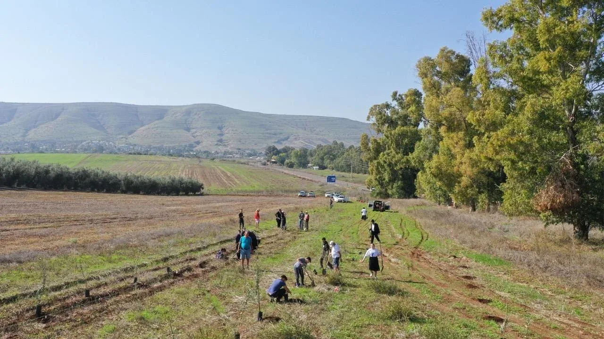

מצווה על כל אדם להשתדל ולטעת עצים בעצמו בארץ ישראל כמו שמסופר בגמ' (ב"ב יד, א) בשבחו של האמורא ר' ינאי, שנטע ארבע מאות כרמים בארץ ישראל. שואלת הגמ' וכי יכול אדם להספיק בחייו ליטע כל כך הרבה כרמים, ותורה מתי ילמד? מסבירה הגמ', שכאשר היו נוטעים כרם חדש בארץ ישראל, היו נותנים לר' ינאי לטעת בהתחלה קצת מהכרם (חמישה אילנות), בשביל לקיים במו ידיו את מצוות נטיעת אילנות ובזה נחשב לו כאילו נטע כל הכרם (ראה ריטב"א, שטמ"ק ומאירי בסוגיה שם).
המצוות בכללם מתחלקות לשתי סוגים: יש מצוות שהעיקר בהן הוא התוצאה, שהפעולה תיעשה ולא דווקא על ידי האיש עצמו ולכן יכולה להיעשות גם ע"י שליח (מצוות פעולתיות - חובת חפצא) כמו מצוות מזוזה, מעקה.
לעומת זאת יש מצוות שהעיקר בהן הוא הפעולה של מקיים המצווה, שמחייבת לעשותה בעצמם ולא יכולה להיעשות ע"י שליח, שהן חובה לעשות בגוף האדם (מצוות עצמאיות -חובת גברא), כתפילין, קריאת המגילה ואכילת מצה.
ויש מצוות מיוחדות שיש בהן את שני החלקים: אמנם העיקר בהן הוא התוצאה, אבל גם הפעולה של מקיים המצווה חשובה מאוד, לכן צריך האדם להשתדל לעשות בגופו חלק מהמצווה.
במצוות ישוב ארץ ישראל, יש את שני החלקים: א. מצווה שהארץ תהיה מיושבת. ב. מצווה שהאדם יישב את הארץ בגופו כדי להתחבר ולאהוב את ארץ ישראל. לכן שנטעו כרם חדש, לא הסתפק ר' ינאי, שהעובדים בכרם נוטעים אלא הלך בעצמו לטעת גם כמה כרמים. (ראה באריכות בספרנו 'ונטעתם')

סיפורי נטיעת עצים
בספר "חזון ציון" (עמ' 139) מובא: "בדרך נסיעתו של הגר"א לארץ ישראל, כתב לתלמידו הג"ר יהושע השיל, בעל "מצמיח ישועה": "יזכני השי"ת לנטוע במו ידי עצי פרי בסביבות ירושלים, לקיים "כי תבואו אל הארץ ונטעתם".
עוד מסופר שם (עמ' 66): ר' הלל ריבלין משקלוב (תקיח-תקצח) תלמיד הגר"א וחבריו נטעו גן גדול של עצי זית ועצי שקדים, על שטח קרקע שרכשו וחכרו בקרבת מערת שמעון הצדיק. כפי שמקובל היה במעשה זה גם תוכן רוחני מיוחד, כפי ביאור הגר"א ומצוותו[1].
ר' מרדכי יפה כותב במכתבו: הלא ידעתם גם שמעתם, כי זה שמונים שנה ויותר אשר הגאון הגדול הצדיק ר' חיים מוואלאזין זצ"ל בעזר גדולי הדור, החל ביסוד המעלה ליסד ישוב בארצנו הקדושה, ועל פיו נסעו שמה גדולי היראים, והמה היו הראשונים המתנדבים לשבת בירושלים, ואח"כ החל לעוררם למקנה שדות וכרמים לקיים מצוות התלויות בארץ (שיבת ציון ח"ב, ט"ז).
ר' דוב הלפרין מספר (עמ' 79): "בזמן שמונטיפיורי היה בפעם הראשונה בא"י (בשנת תקפ"ח), הלכו אתו ר' הלל שקלובר ואב זקני ר' זלמן ז"ל ועוד נכבדים מהכולל להראות לו את הגן היהודי, שנטעו אצל מערת שמעון הצדיק. בלכתם בדרך אמר ר' זלמן למונטיפיורי הרבה בדיחות יפות כדרכו, ומונטיפיורי נהנה וצחק. ר' הלל הוסיף כי ר' זלמן רוצה לקים בזה "אז ימלא שחוק פינו" הכתוב בשיבת ציון.
בהיותו בגן שאל מונטיפיורי את ר' זלמן אם יסכים לנסוע אתו ללונדון להיות אצלו? ויענה לו ר' זלמן: יפה לי שעה אחת בירושלים בעבודת הקודש המקרבת את הגאולה מהיות אפילו מיניסטר בלונדון כל ימי חי"... גם עוד אחדים מהעובדים בגן שאל מונטיפיורי אותה שאלה, וגם הם ענו לו מעין אותה תשובה ומונטיפיורי שמח מעוד על תשובותיהם".